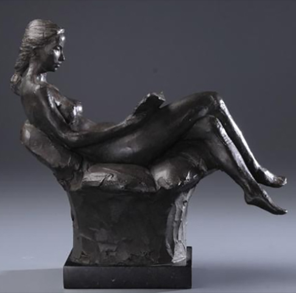

TEST SCULPTURE
>

Night Bird
Obsidian, quartz crystal, and polycarbonate. 1992. 9″ high with base.
I carved Night Bird in half of a boulder of obsidian from Central Oregon. The smooth, dark, fast-moving,
delicately formed obsidian bird stands out against the jagged quartz crystal landscape beneath it. Obsidian,
being volcanic glass, is translucent, almost transparent, and this hollow form actually transmits light all the
way through.
I still have the other half of the boulder and it, just like Night Bird, is jet black with rusty red streaks.
Photo by Stuart Dee